分析报告 · 机器可读汇总 · 完整对比表 · 复核与校验说明
25 个对照场景；12 份 CPU profile；24 张原始火焰图。当前上游的合入不改变这些历史测量的源版本。图宽为样本权重，不是墙钟时间；alloc_space 是累计采样分配，不是峰值／存活堆。命令从仓库根目录执行，使用 profile 内嵌符号，无需本地原测试二进制。
go tool pprof -http=127.0.0.1:0 -sample_index=cpu docs/artifacts/performance-v1.6.2-vs-5a8115e/baseline/cpu-chat-short/cpu.pprof
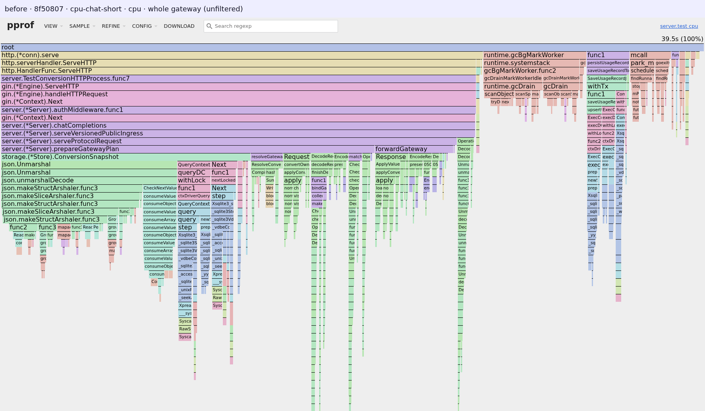
go tool pprof -http=127.0.0.1:0 -sample_index=cpu docs/artifacts/performance-v1.6.2-vs-5a8115e/baseline/cpu-image2/cpu.pprof
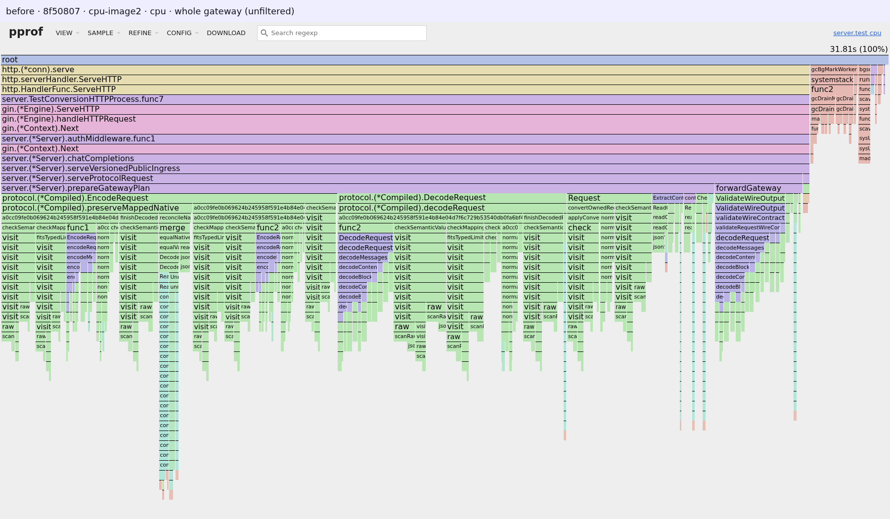
go tool pprof -http=127.0.0.1:0 -sample_index=cpu docs/artifacts/performance-v1.6.2-vs-5a8115e/baseline/cpu-stream256/cpu.pprof
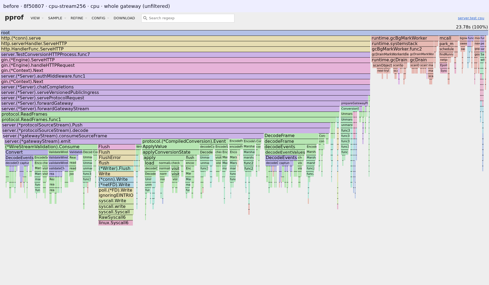
go tool pprof -http=127.0.0.1:0 -sample_index=alloc_space -base docs/artifacts/performance-v1.6.2-vs-5a8115e/baseline/memory-chat-short/alloc-before.pprof docs/artifacts/performance-v1.6.2-vs-5a8115e/baseline/memory-chat-short/alloc-after.pprof
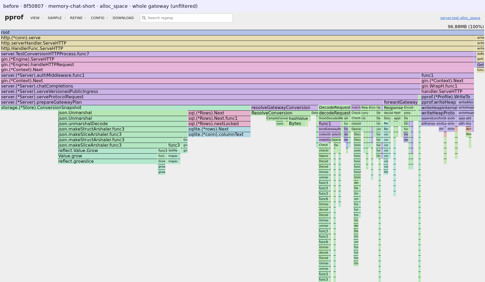
go tool pprof -http=127.0.0.1:0 -sample_index=alloc_space -base docs/artifacts/performance-v1.6.2-vs-5a8115e/baseline/memory-image2/alloc-before.pprof docs/artifacts/performance-v1.6.2-vs-5a8115e/baseline/memory-image2/alloc-after.pprof
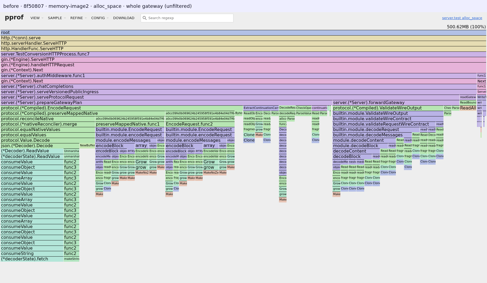
go tool pprof -http=127.0.0.1:0 -sample_index=alloc_space -base docs/artifacts/performance-v1.6.2-vs-5a8115e/baseline/memory-stream256/alloc-before.pprof docs/artifacts/performance-v1.6.2-vs-5a8115e/baseline/memory-stream256/alloc-after.pprof
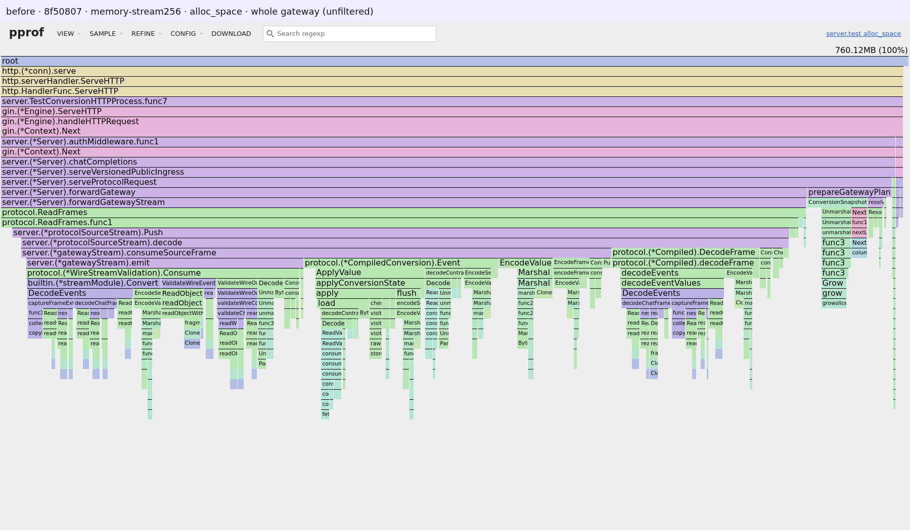
go tool pprof -http=127.0.0.1:0 -sample_index=cpu docs/artifacts/performance-v1.6.2-vs-5a8115e/current/cpu-chat-short/cpu.pprof
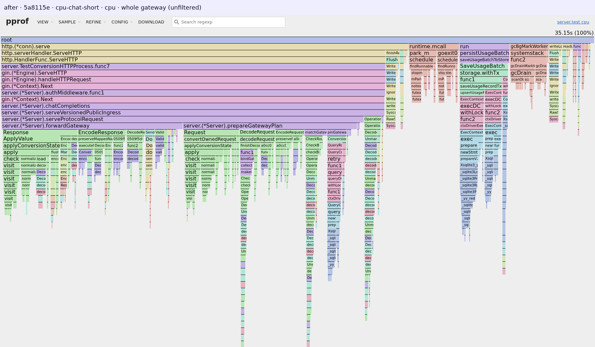
go tool pprof -http=127.0.0.1:0 -sample_index=cpu docs/artifacts/performance-v1.6.2-vs-5a8115e/current/cpu-image2/cpu.pprof
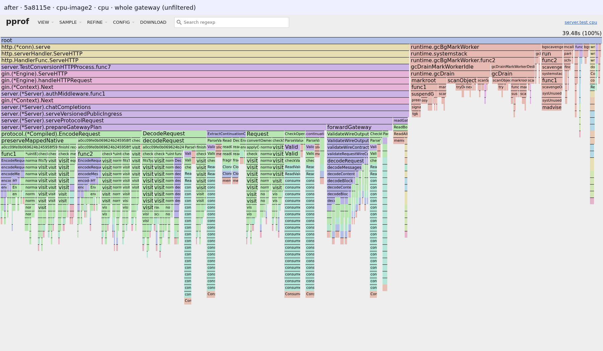
go tool pprof -http=127.0.0.1:0 -sample_index=cpu docs/artifacts/performance-v1.6.2-vs-5a8115e/current/cpu-stream256/cpu.pprof
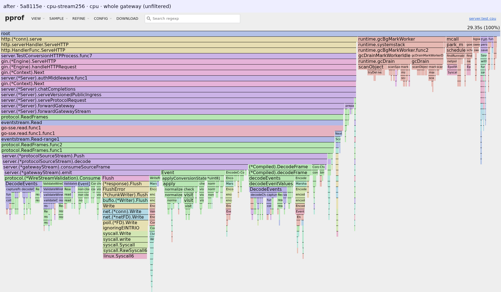
go tool pprof -http=127.0.0.1:0 -sample_index=alloc_space -base docs/artifacts/performance-v1.6.2-vs-5a8115e/current/memory-chat-short/alloc-before.pprof docs/artifacts/performance-v1.6.2-vs-5a8115e/current/memory-chat-short/alloc-after.pprof
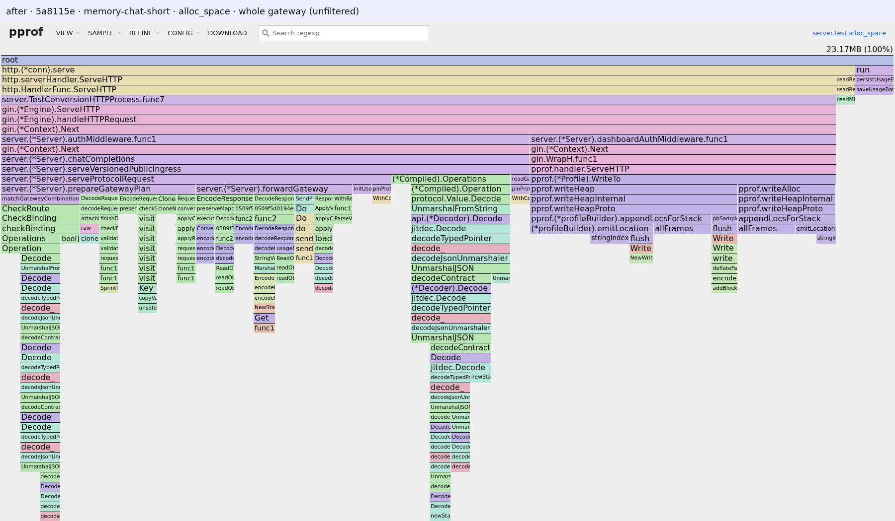
go tool pprof -http=127.0.0.1:0 -sample_index=alloc_space -base docs/artifacts/performance-v1.6.2-vs-5a8115e/current/memory-image2/alloc-before.pprof docs/artifacts/performance-v1.6.2-vs-5a8115e/current/memory-image2/alloc-after.pprof
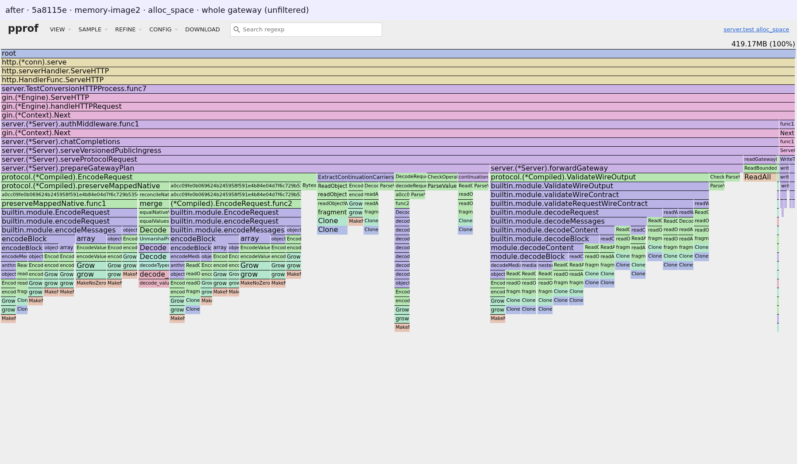
go tool pprof -http=127.0.0.1:0 -sample_index=alloc_space -base docs/artifacts/performance-v1.6.2-vs-5a8115e/current/memory-stream256/alloc-before.pprof docs/artifacts/performance-v1.6.2-vs-5a8115e/current/memory-stream256/alloc-after.pprof
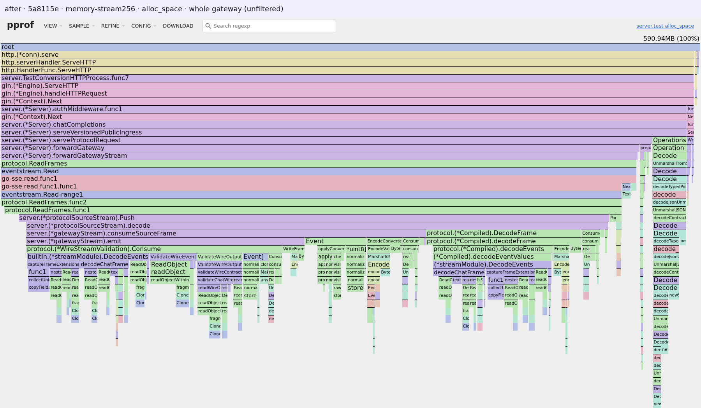
go tool pprof -http=127.0.0.1:0 -sample_index=cpu docs/artifacts/performance-v1.6.2-vs-5a8115e/baseline-legacy/cpu-events/cpu.pprof
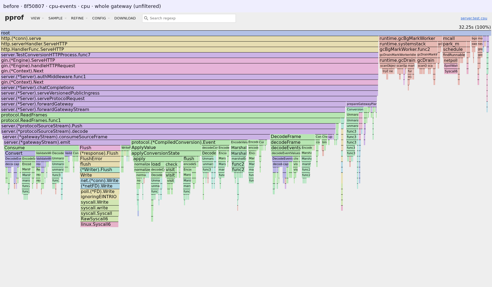
go tool pprof -http=127.0.0.1:0 -sample_index=cpu docs/artifacts/performance-v1.6.2-vs-5a8115e/baseline-legacy/cpu-image31/cpu.pprof
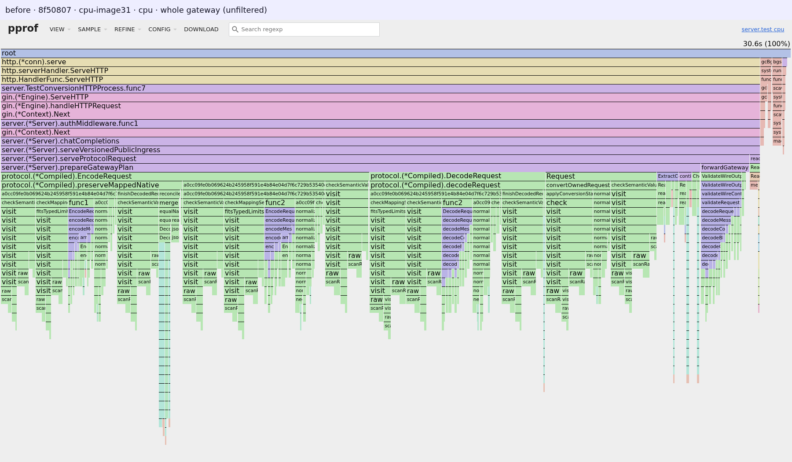
go tool pprof -http=127.0.0.1:0 -sample_index=cpu docs/artifacts/performance-v1.6.2-vs-5a8115e/baseline-legacy/cpu-nodes/cpu.pprof
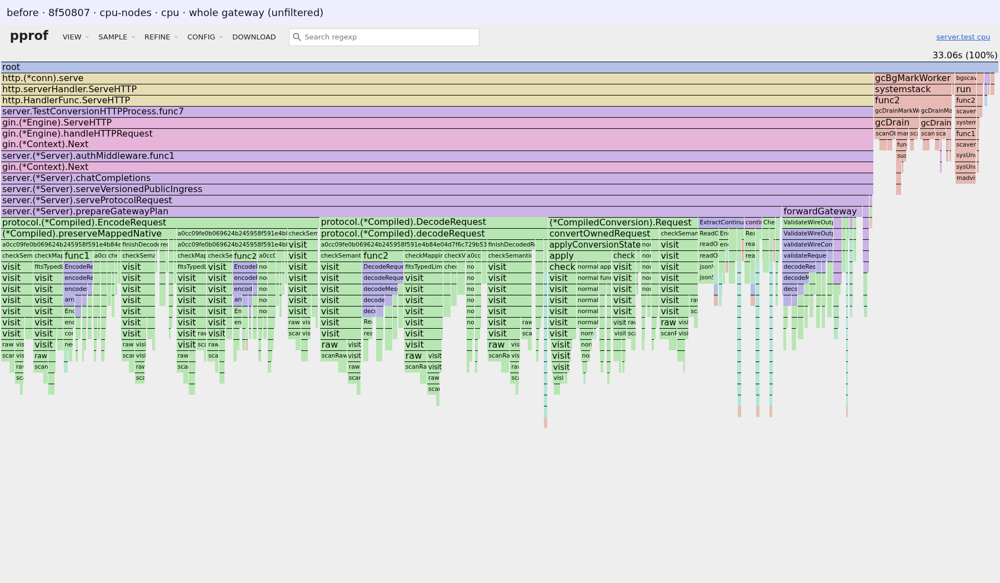
go tool pprof -http=127.0.0.1:0 -sample_index=alloc_space -base docs/artifacts/performance-v1.6.2-vs-5a8115e/baseline-legacy/memory-events/alloc-before.pprof docs/artifacts/performance-v1.6.2-vs-5a8115e/baseline-legacy/memory-events/alloc-after.pprof
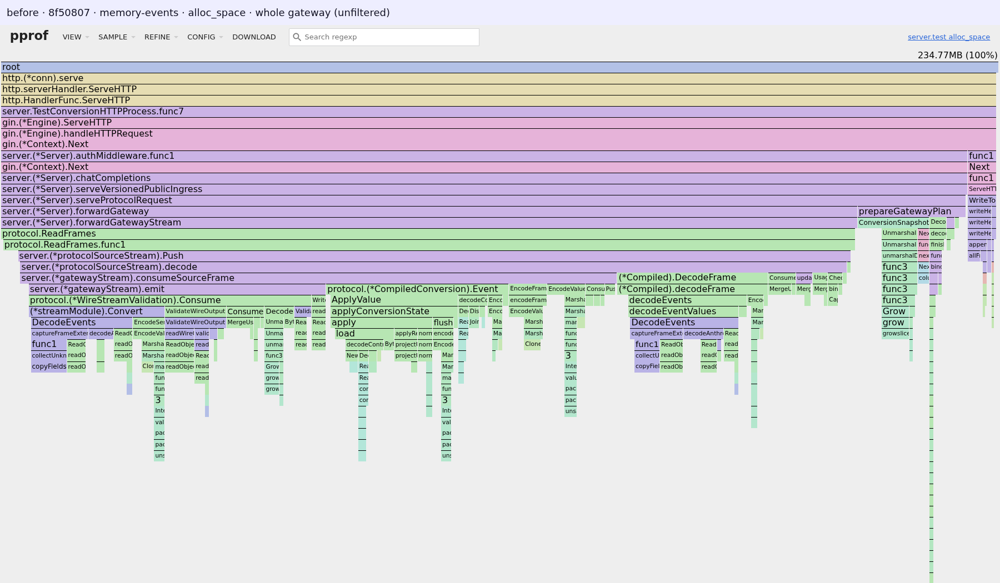
go tool pprof -http=127.0.0.1:0 -sample_index=alloc_space -base docs/artifacts/performance-v1.6.2-vs-5a8115e/baseline-legacy/memory-image31/alloc-before.pprof docs/artifacts/performance-v1.6.2-vs-5a8115e/baseline-legacy/memory-image31/alloc-after.pprof
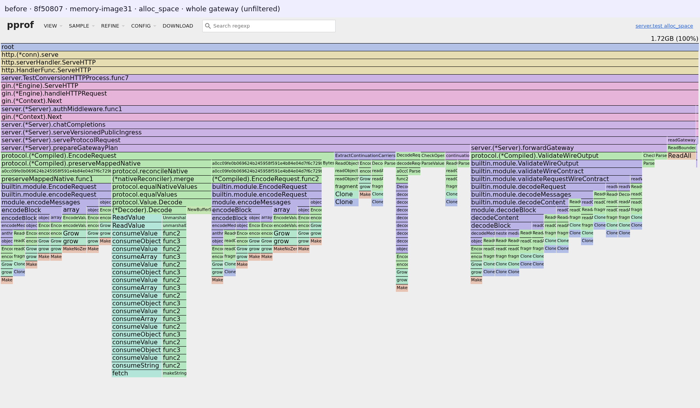
go tool pprof -http=127.0.0.1:0 -sample_index=alloc_space -base docs/artifacts/performance-v1.6.2-vs-5a8115e/baseline-legacy/memory-nodes/alloc-before.pprof docs/artifacts/performance-v1.6.2-vs-5a8115e/baseline-legacy/memory-nodes/alloc-after.pprof
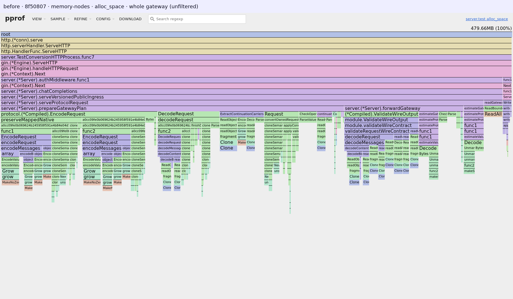
go tool pprof -http=127.0.0.1:0 -sample_index=cpu docs/artifacts/performance-v1.6.2-vs-5a8115e/current-legacy/cpu-events/cpu.pprof
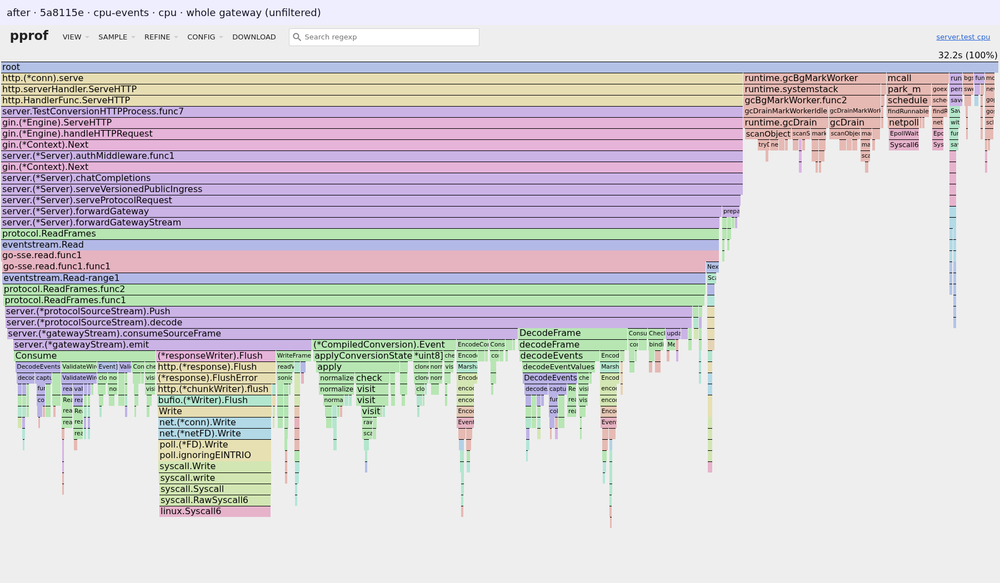
go tool pprof -http=127.0.0.1:0 -sample_index=cpu docs/artifacts/performance-v1.6.2-vs-5a8115e/current-legacy/cpu-image31/cpu.pprof
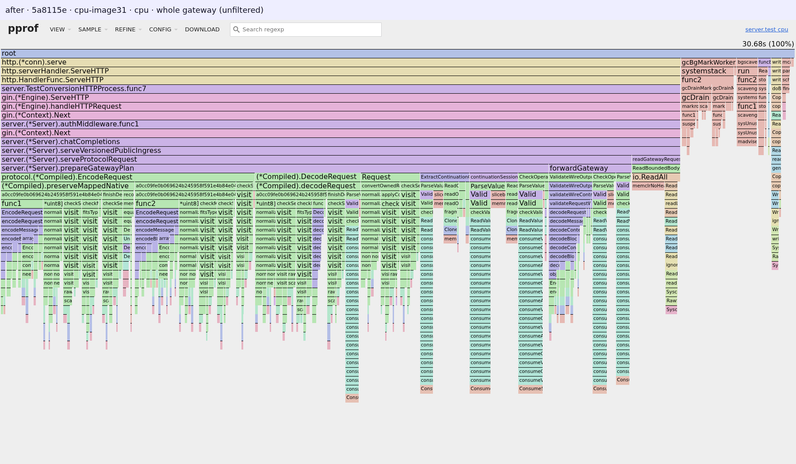
go tool pprof -http=127.0.0.1:0 -sample_index=cpu docs/artifacts/performance-v1.6.2-vs-5a8115e/current-legacy/cpu-nodes/cpu.pprof
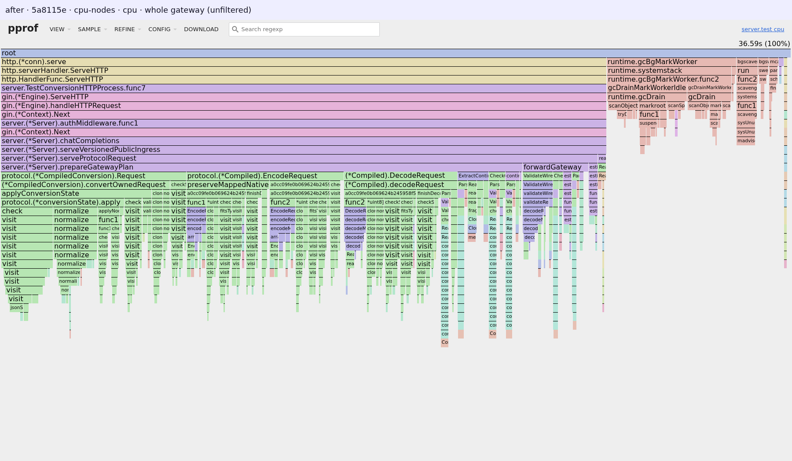
go tool pprof -http=127.0.0.1:0 -sample_index=alloc_space -base docs/artifacts/performance-v1.6.2-vs-5a8115e/current-legacy/memory-events/alloc-before.pprof docs/artifacts/performance-v1.6.2-vs-5a8115e/current-legacy/memory-events/alloc-after.pprof
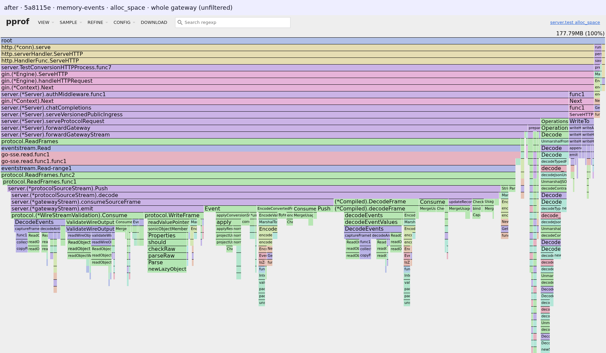
go tool pprof -http=127.0.0.1:0 -sample_index=alloc_space -base docs/artifacts/performance-v1.6.2-vs-5a8115e/current-legacy/memory-image31/alloc-before.pprof docs/artifacts/performance-v1.6.2-vs-5a8115e/current-legacy/memory-image31/alloc-after.pprof
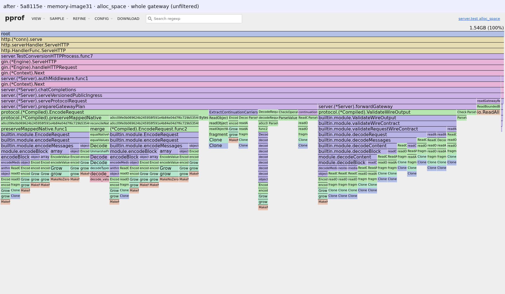
go tool pprof -http=127.0.0.1:0 -sample_index=alloc_space -base docs/artifacts/performance-v1.6.2-vs-5a8115e/current-legacy/memory-nodes/alloc-before.pprof docs/artifacts/performance-v1.6.2-vs-5a8115e/current-legacy/memory-nodes/alloc-after.pprof
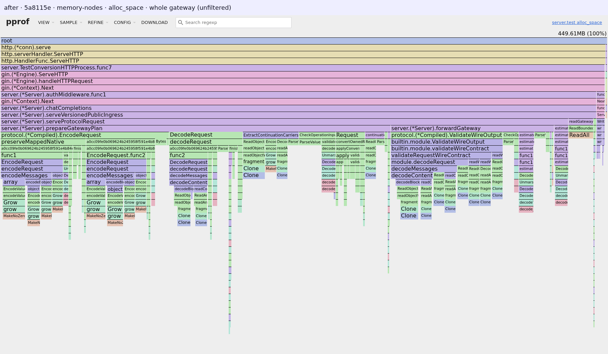